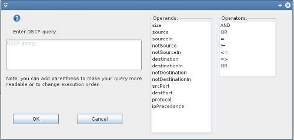

How to define Access control list (ACL)
Defining ACLs is simple: choose operand (click on it), choose operation (if necessary) and add desired value.

Examples
- packet's source must be one of vertices named node1, node2 or node3: sourceIn(['node1','node2','node3'])
- packet's source must equal to node1: source('node1')
- packet's size must be less then 100 and protocol must be UDP: (size<100) or (protocol='UDP')
- packet's source name begins with letter x (using regular expressions): source('x.*')